Code
require(ISLR2)
data("Carseats")
help("Carseats")This example has been adapted from the book “Introduction to Statistical Learning with R”, lab 8.3.
The authors have decided to use the R tree package, which is not the most powerful R package for trees, but offers a good compromise between power and flexibility.
The lab relies on the Carseats dataset, a simulated dataset, that is included with the book’s package, containing several variables about sales of child car seats at different stores.
require(ISLR2)
data("Carseats")
help("Carseats")A data frame with 400 observations on the following 11 variables.
Sales: Unit sales (in thousands) at each locationCompPrice: Price charged by competitor at each locationIncome: Community income level (in thousands of dollars)Advertising: Local advertising budget for company at each location (in thousands of dollars)Population: Population size in region (in thousands)Price: Price company charges for car seats at each siteShelveLoc: A factor with levels Bad, Good and Medium indicating the quality of the shelving location for the car seats at each siteAge: Average age of the local populationEducation: Education level at each locationUrban: A factor with levels No and Yes to indicate whether the store is in an urban or rural locationUS: A factor with levels No and Yes to indicate whether the store is in the US or notThe first part of the lab will aim at predicting the variable sales.
In order to apply classification trees first, we start by categorizing the salesvariable. This is not usually seen as a good strategy, so take it only for didactical purpose.
We use a generic name for the dataset, in order to facilitate code reuse.
myDescription <- "The data are a simulated data set containing sales of child car seats at different stores [@james2013introduction]"
mydataset <- Carseatsn <- nrow(mydataset)
p <- ncol(mydataset)There are 400 rows and 11 columns.
The variable Sales is categorized creating a new variable, High, which takes on a value of Yes if the Sales variable exceeds 8, and a value of No otherwise.
# as.factor() changes the type of variable to factor
mydataset$High=as.factor(ifelse(mydataset$Sales<=8,"No","Yes"))The number of observations for each class is:
kable(table(mydataset$High), caption= "Number of observations for each class", col.names = c('High','Freq'))| High | Freq |
|---|---|
| No | 236 |
| Yes | 164 |
The aim is of this study is to predict the categorical values of sales (High) using all variables but Sales.
It is a classification problem and we will build a classification tree model.
This is a short data set summary
summary(mydataset) Sales CompPrice Income Advertising
Min. : 0.000 Min. : 77 Min. : 21.00 Min. : 0.000
1st Qu.: 5.390 1st Qu.:115 1st Qu.: 42.75 1st Qu.: 0.000
Median : 7.490 Median :125 Median : 69.00 Median : 5.000
Mean : 7.496 Mean :125 Mean : 68.66 Mean : 6.635
3rd Qu.: 9.320 3rd Qu.:135 3rd Qu.: 91.00 3rd Qu.:12.000
Max. :16.270 Max. :175 Max. :120.00 Max. :29.000
Population Price ShelveLoc Age Education
Min. : 10.0 Min. : 24.0 Bad : 96 Min. :25.00 Min. :10.0
1st Qu.:139.0 1st Qu.:100.0 Good : 85 1st Qu.:39.75 1st Qu.:12.0
Median :272.0 Median :117.0 Medium:219 Median :54.50 Median :14.0
Mean :264.8 Mean :115.8 Mean :53.32 Mean :13.9
3rd Qu.:398.5 3rd Qu.:131.0 3rd Qu.:66.00 3rd Qu.:16.0
Max. :509.0 Max. :191.0 Max. :80.00 Max. :18.0
Urban US High
No :118 No :142 No :236
Yes:282 Yes:258 Yes:164
An improved description:
skimr::skim(mydataset)| Name | mydataset |
| Number of rows | 400 |
| Number of columns | 12 |
| _______________________ | |
| Column type frequency: | |
| factor | 4 |
| numeric | 8 |
| ________________________ | |
| Group variables | None |
Variable type: factor
| skim_variable | n_missing | complete_rate | ordered | n_unique | top_counts |
|---|---|---|---|---|---|
| ShelveLoc | 0 | 1 | FALSE | 3 | Med: 219, Bad: 96, Goo: 85 |
| Urban | 0 | 1 | FALSE | 2 | Yes: 282, No: 118 |
| US | 0 | 1 | FALSE | 2 | Yes: 258, No: 142 |
| High | 0 | 1 | FALSE | 2 | No: 236, Yes: 164 |
Variable type: numeric
| skim_variable | n_missing | complete_rate | mean | sd | p0 | p25 | p50 | p75 | p100 | hist |
|---|---|---|---|---|---|---|---|---|---|---|
| Sales | 0 | 1 | 7.50 | 2.82 | 0 | 5.39 | 7.49 | 9.32 | 16.27 | ▁▆▇▃▁ |
| CompPrice | 0 | 1 | 124.97 | 15.33 | 77 | 115.00 | 125.00 | 135.00 | 175.00 | ▁▅▇▃▁ |
| Income | 0 | 1 | 68.66 | 27.99 | 21 | 42.75 | 69.00 | 91.00 | 120.00 | ▇▆▇▆▅ |
| Advertising | 0 | 1 | 6.64 | 6.65 | 0 | 0.00 | 5.00 | 12.00 | 29.00 | ▇▃▃▁▁ |
| Population | 0 | 1 | 264.84 | 147.38 | 10 | 139.00 | 272.00 | 398.50 | 509.00 | ▇▇▇▇▇ |
| Price | 0 | 1 | 115.80 | 23.68 | 24 | 100.00 | 117.00 | 131.00 | 191.00 | ▁▂▇▆▁ |
| Age | 0 | 1 | 53.32 | 16.20 | 25 | 39.75 | 54.50 | 66.00 | 80.00 | ▇▆▇▇▇ |
| Education | 0 | 1 | 13.90 | 2.62 | 10 | 12.00 | 14.00 | 16.00 | 18.00 | ▇▇▃▇▇ |
It is very common that the data need to be preprocessed before training the model*
In this case, there seem to be no missing values, no outliers and most variables are decently symmetrical, so no cleaning or preprocessing are required.
In order to properly evaluate the performance of a model, we must estimate the error rather than simply computing the training error.
With thhis aim in mind we proceed as follows:
set.seed(2)
pt <- 1/2
train <- sample(1:nrow(mydataset),pt*nrow(mydataset))
mydataset.test <- mydataset[-train,]
High.test <- mydataset[-train,"High"]The train and tets set have 200 200 observations respectively.
In train data, the number of observations for each class is:
kableExtra::kable(table(mydataset[train,"High"]), caption= "Train data: number of observations for each class", col.names = c('High','Freq'))| High | Freq |
|---|---|
| No | 119 |
| Yes | 81 |
We now use the tree() function to fit a classification tree in order to predict High using all variables but Sales using only de train set.
library(tree)
tree.mydataset=tree(High~.-Sales, mydataset,
subset=train,
split="deviance")The summary() function lists the variables that are used as internal nodes in the tree, the number of terminal nodes, and the training error rate
summary(tree.mydataset)
Classification tree:
tree(formula = High ~ . - Sales, data = mydataset, subset = train,
split = "deviance")
Variables actually used in tree construction:
[1] "Price" "Population" "ShelveLoc" "Age" "Education"
[6] "CompPrice" "Advertising" "Income" "US"
Number of terminal nodes: 21
Residual mean deviance: 0.5543 = 99.22 / 179
Misclassification error rate: 0.115 = 23 / 200 # summary(tree.mydataset2)For classification trees the deviance of a tree (roughly equivalent to the concept of impurity) is defined as the sum over all terminal leaves of: \[ -2 \sum_m \sum_k n_{mk} log(\hat{p}_{mk}), \]
where \(n_{mk}\) is the number of observations in the mth terminal node that belong to the kth class.
The residual mean deviance reported is simply the deviance divided by \(n - |T_0|\) where \(T_0\) is the number of terminal nodes.
The next step is display the tree graphically. We use the plot() function to display the tree structure, and the text()function to display the node labels.
plot(tree.mydataset)
text(tree.mydataset,pretty=0, cex=0.6)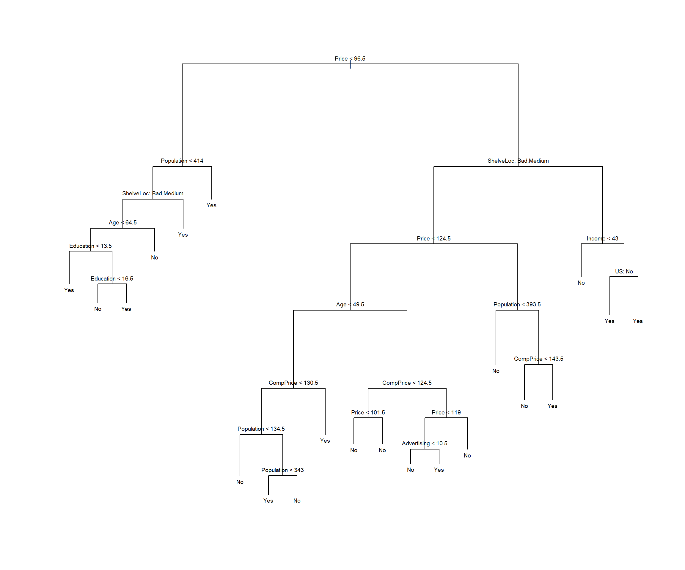
It is also possible to show a R print output corresponding to each branch of the tree.
tree.mydatasetnode), split, n, deviance, yval, (yprob)
* denotes terminal node
1) root 200 270.000 No ( 0.59500 0.40500 )
2) Price < 96.5 40 47.050 Yes ( 0.27500 0.72500 )
4) Population < 414 31 40.320 Yes ( 0.35484 0.64516 )
8) ShelveLoc: Bad,Medium 25 34.300 Yes ( 0.44000 0.56000 )
16) Age < 64.5 17 20.600 Yes ( 0.29412 0.70588 )
32) Education < 13.5 7 0.000 Yes ( 0.00000 1.00000 ) *
33) Education > 13.5 10 13.860 Yes ( 0.50000 0.50000 )
66) Education < 16.5 5 5.004 No ( 0.80000 0.20000 ) *
67) Education > 16.5 5 5.004 Yes ( 0.20000 0.80000 ) *
17) Age > 64.5 8 8.997 No ( 0.75000 0.25000 ) *
9) ShelveLoc: Good 6 0.000 Yes ( 0.00000 1.00000 ) *
5) Population > 414 9 0.000 Yes ( 0.00000 1.00000 ) *
3) Price > 96.5 160 201.800 No ( 0.67500 0.32500 )
6) ShelveLoc: Bad,Medium 135 154.500 No ( 0.74074 0.25926 )
12) Price < 124.5 82 107.700 No ( 0.63415 0.36585 )
24) Age < 49.5 34 45.230 Yes ( 0.38235 0.61765 )
48) CompPrice < 130.5 21 28.680 No ( 0.57143 0.42857 )
96) Population < 134.5 6 0.000 No ( 1.00000 0.00000 ) *
97) Population > 134.5 15 20.190 Yes ( 0.40000 0.60000 )
194) Population < 343 7 5.742 Yes ( 0.14286 0.85714 ) *
195) Population > 343 8 10.590 No ( 0.62500 0.37500 ) *
49) CompPrice > 130.5 13 7.051 Yes ( 0.07692 0.92308 ) *
25) Age > 49.5 48 46.330 No ( 0.81250 0.18750 )
50) CompPrice < 124.5 28 14.410 No ( 0.92857 0.07143 )
100) Price < 101.5 8 8.997 No ( 0.75000 0.25000 ) *
101) Price > 101.5 20 0.000 No ( 1.00000 0.00000 ) *
51) CompPrice > 124.5 20 25.900 No ( 0.65000 0.35000 )
102) Price < 119 14 19.410 No ( 0.50000 0.50000 )
204) Advertising < 10.5 9 11.460 No ( 0.66667 0.33333 ) *
205) Advertising > 10.5 5 5.004 Yes ( 0.20000 0.80000 ) *
103) Price > 119 6 0.000 No ( 1.00000 0.00000 ) *
13) Price > 124.5 53 33.120 No ( 0.90566 0.09434 )
26) Population < 393.5 34 0.000 No ( 1.00000 0.00000 ) *
27) Population > 393.5 19 21.900 No ( 0.73684 0.26316 )
54) CompPrice < 143.5 13 7.051 No ( 0.92308 0.07692 ) *
55) CompPrice > 143.5 6 7.638 Yes ( 0.33333 0.66667 ) *
7) ShelveLoc: Good 25 31.340 Yes ( 0.32000 0.68000 )
14) Income < 43 7 8.376 No ( 0.71429 0.28571 ) *
15) Income > 43 18 16.220 Yes ( 0.16667 0.83333 )
30) US: No 6 8.318 Yes ( 0.50000 0.50000 ) *
31) US: Yes 12 0.000 Yes ( 0.00000 1.00000 ) *In order to properly evaluate the performance of a classification tree on these data, we must estimate the test error rather than simply computing the training error.
We have split the observations into a training set and a test set, and the tree has been built using the training set.
After this, the tree performance is evaluated on the test data. The predict() function can be used for this purpose.
tree.pred=predict(tree.mydataset,mydataset.test,type="class")
res <- table(tree.pred,High.test)
res High.test
tree.pred No Yes
No 104 33
Yes 13 50accrcy <- sum(diag(res)/sum(res))The accuracy is 0.77 or misclassification error rate is 0.23, which are respectively smaller and biiger than those computed from the tree built on the train data.
We know there is a chance that fitting the tree produces some overfitting so we can consider whether pruning the tree could lead to improved results.
The function cv.tree() performs cross-validation in order to determine the optimal level of tree complexity. - Cost complexity pruning is used in order to select a sequence of trees for consideration. - We use the argument FUN = prune.misclass in order to indicate that we want the classification error rate to guide the cross-validation and pruning process, rather than the default for the cv.tree() function, which is deviance.
The cv.tree() function reports the number of terminal nodes of each tree considered (size) as well as the corresponding error rate and the value of the cost-complexity parameter used
set.seed(123987)
cv.mydataset=cv.tree(tree.mydataset,FUN=prune.misclass)
names(cv.mydataset)[1] "size" "dev" "k" "method"cv.mydataset$size
[1] 21 19 14 9 8 5 3 2 1
$dev
[1] 82 80 78 78 78 76 76 84 82
$k
[1] -Inf 0.0 1.0 1.4 2.0 3.0 4.0 9.0 18.0
$method
[1] "misclass"
attr(,"class")
[1] "prune" "tree.sequence"Note that, despite the name, dev corresponds to the cross-validation error rate in this instance.
The output shows how, as the size of the tree increases, so does the deviance.
This can be better visualized by plotting the error rate as a function of sizeand k.
par(mfrow=c(1,2))
plot(cv.mydataset$size,cv.mydataset$dev,type="b")
plot(cv.mydataset$k,cv.mydataset$dev,type="b")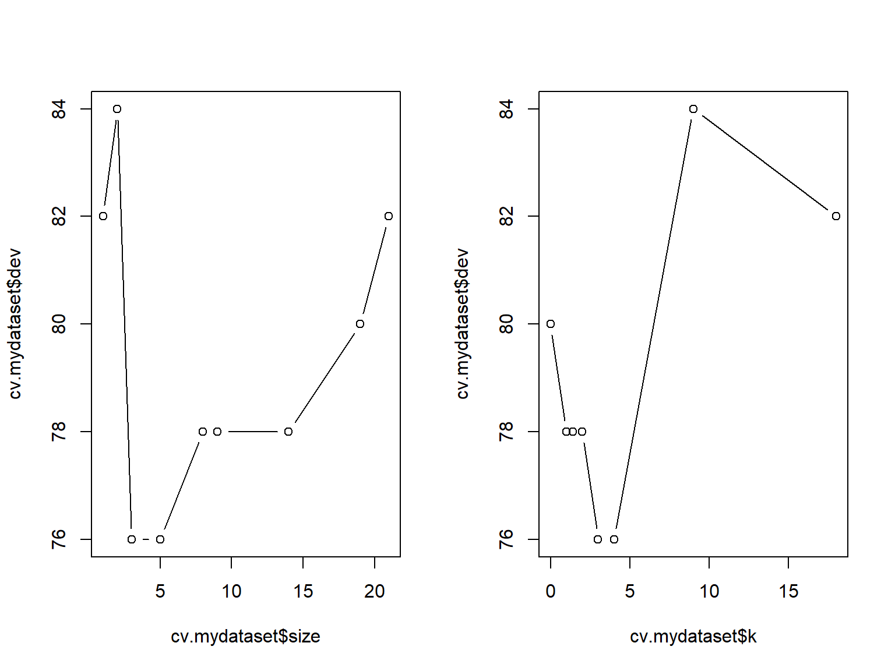
par(mfrow=c(1,1))These plots can be used to suggest the best tree, but it can also be chosen automatically by taking the minimal value \(k\) from the output of the cv.tree function.
myBest <- cv.mydataset$size[which.min(cv.mydataset$dev)]Now, the prune.misclass() function can be used to prune the tree and obtain a “best tree”. If we decide to call the best tree the one that has reached the smallest deviance we can proceed as follows:
prune.mydataset=prune.misclass(tree.mydataset,best=myBest)plot(prune.mydataset)
text(prune.mydataset,pretty=0)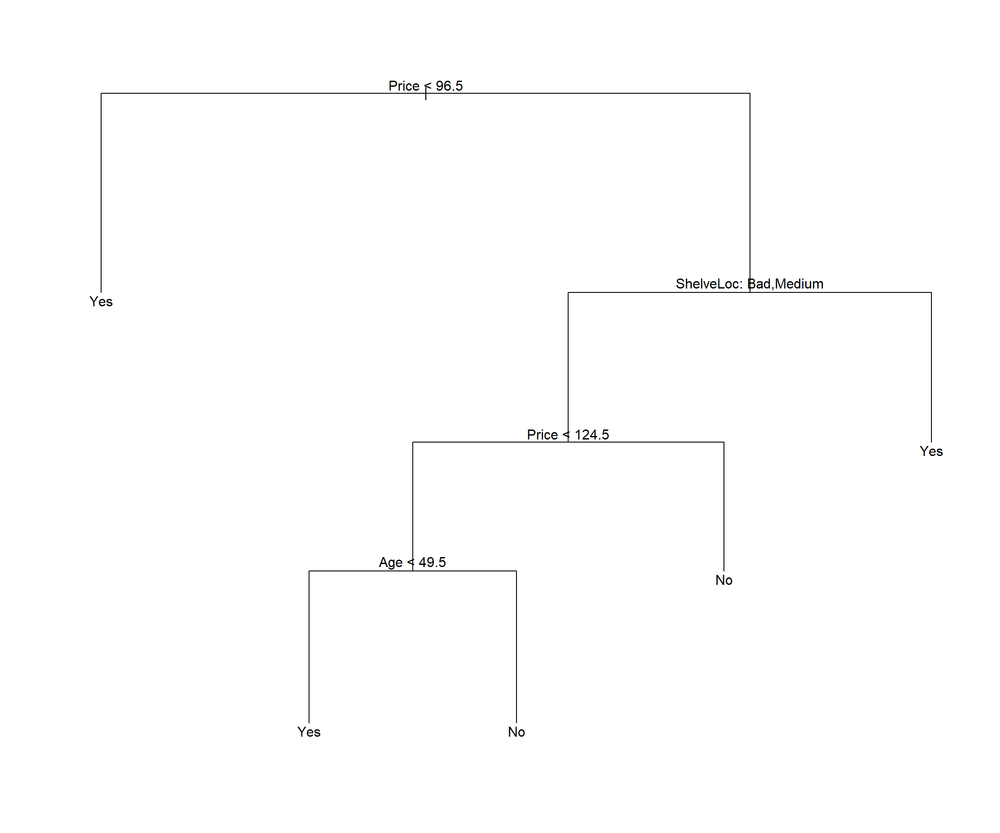
The tree is clearly smaller than the original one, but how well does this pruned tree perform on the test data set?
prunedTree.pred=predict(prune.mydataset,mydataset.test,type="class")
prunedRes <- table(prunedTree.pred,High.test)
prunedRes High.test
prunedTree.pred No Yes
No 82 16
Yes 35 67prunedAccrcy <- sum(diag(prunedRes)/sum(prunedRes))The accuracy is 0.745.
If we increase the value of best, for example 21 terminal nodes, we obtain a larger pruned tree with lower classification accuracy:
prune.mydataset=prune.misclass(tree.mydataset,
best = cv.mydataset$size[1])
plot(prune.mydataset)
text(prune.mydataset, pretty=0)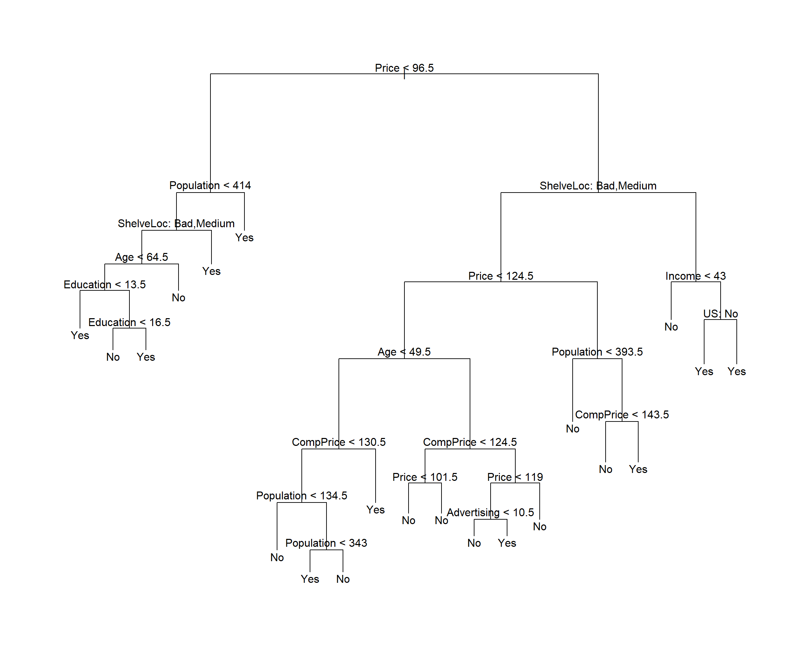
ptree.pred=predict(prune.mydataset, mydataset.test, type="class")
pres <- table(ptree.pred, High.test)
pres High.test
ptree.pred No Yes
No 104 31
Yes 13 52paccrcy <- sum(diag(pres)/sum(pres))The accuracy is 0.78.
In conclusion It can be seen that the difference in accuracy between the pruned tree and the original one is small. Indeed, changing the seed for splitting can lead to both smaller or bigger accuracy in the pruned tree than in the original one.
Obviously, the pruned tree is smaller so even if the original tree is slightly more accurate than the pruned one we might prefer the second one, because it is relying on less data to produce almost the same accuracy, whic is something that most users usually prefer.
A reasonable question is how would the accuracy of the trees be affected if, instead of categorizing sales we had used it “as.is”, building a regression tree instead.
Although it may seem straightforward to answer this question by building a regression tree using the approach described in next section, the fact is that it is no so immediate as it may seem.
The reason for this is that, if we wish to compare the perfomance of both approaches we need a common measure of accuracy. For regression trees the Mean Square Error is generally used, while accuracy or some other measures derived from the confusion matrix are common for classification trees. Comparing those two measures, however, is not straightforward. One may think of relying on some kind of information measure, that can be computed on both regresion and classification trees such as entropy or Kullback-Leiber divergence, but the problem then is how to derive such measure for both the classification and the regression trees.
Even if we do not aim at comparing regression and classification problems, the carseats problem proivides a good example on how to build and optimize a regression tree.
Remember our goal is to predict car sales from a simulated data set containing sales of child car seats at different stores (James et al. 2013). In order to make sections reproducible, we reload the package and the data.
require(ISLR2)
data("Carseats")
mydataset <- CarseatsWe split original data into test and training sets. Package resample allows to do a weighted splitting to enbsure that no class is underrepresented due to chance. If sample size is high this can usually be ignored.
# Split the data into training and test sets
set.seed(2)
pt <- 1/2
train <- sample(1:nrow(mydataset), pt * nrow(mydataset))
mydataset.test <- mydataset[-train,]
sales.test <- mydataset$Sales[-train]# Fit the regression tree using the Sales variable
tree.mydataset <- tree(Sales ~ . , mydataset,
subset = train)
# Summary of the fitted regression tree
summary(tree.mydataset)
Regression tree:
tree(formula = Sales ~ ., data = mydataset, subset = train)
Variables actually used in tree construction:
[1] "Price" "ShelveLoc" "CompPrice" "Age" "Advertising"
[6] "Population"
Number of terminal nodes: 14
Residual mean deviance: 2.602 = 484 / 186
Distribution of residuals:
Min. 1st Qu. Median Mean 3rd Qu. Max.
-4.71700 -1.08700 -0.01026 0.00000 1.11300 4.06600 # Plot the regression tree
plot(tree.mydataset)
text(tree.mydataset, pretty = 0, cex = 0.6)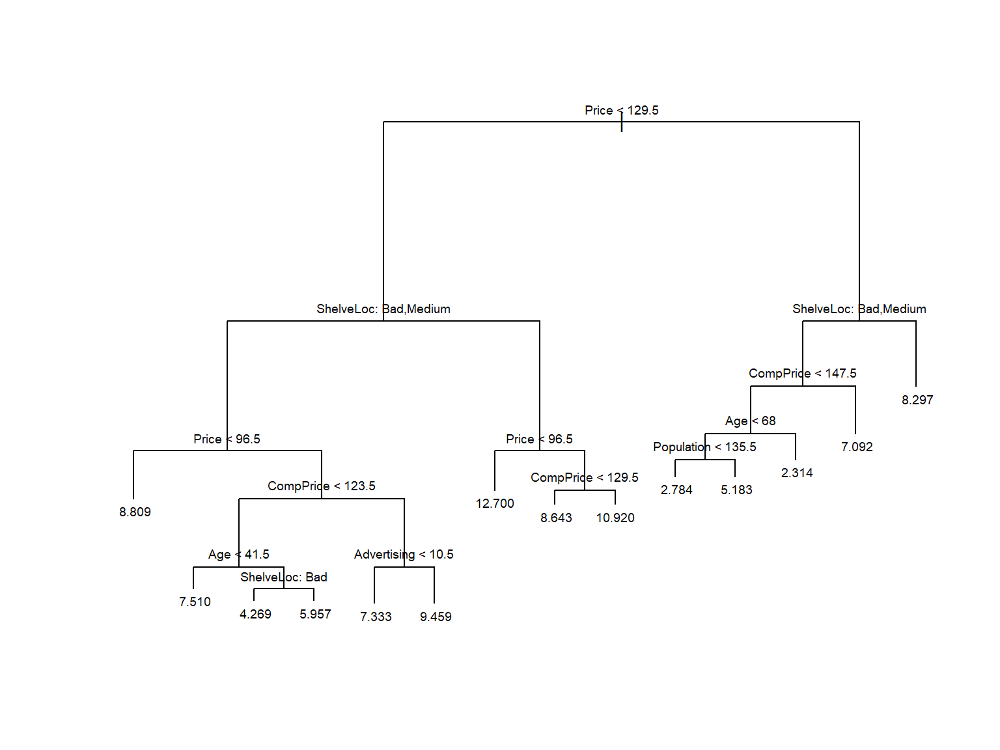
# Predict using the test data
tree.pred <- predict(tree.mydataset, mydataset.test)A common measure of prediction error is the Mean Square Error.
Notice that it is computed from a direct substraction between the predicted sales and the original values in the test subset.
mse1 <- mean((tree.pred - sales.test)^2)
mse1[1] 4.471569The mean squared error obtained from the original tree is 4.4715694.
In order to optimize the trune we first compute the best cost-complexity parameter using cross-validation and then use it to prune the tree.
# Prune the regression tree
set.seed(123987)
cv.mydataset <- cv.tree(tree.mydataset, FUN = prune.tree)
names(cv.mydataset)[1] "size" "dev" "k" "method"cv.mydataset$size
[1] 14 13 12 11 10 9 8 7 6 4 3 2 1
$dev
[1] 1146.347 1178.392 1178.275 1201.676 1239.316 1217.896 1242.089 1253.068
[9] 1202.806 1211.749 1206.363 1295.017 1578.720
$k
[1] -Inf 16.92509 19.38585 23.44178 29.89370 36.28493 50.16562
[8] 54.84825 65.75957 80.79945 90.11022 179.77305 277.78708
$method
[1] "deviance"
attr(,"class")
[1] "prune" "tree.sequence"Before selecting the best \(\alpha\) value it may be useful to plot the MSE as a function of the tree size or of \(\alpha\) itself. Notice that \(\alpha\) is named as “\(k\)” in the tree package.
# Plot the cross-validation error
par(mfrow = c(1, 2))
plot(cv.mydataset$size, cv.mydataset$dev, type = "b")
plot(cv.mydataset$k, cv.mydataset$dev, type = "b")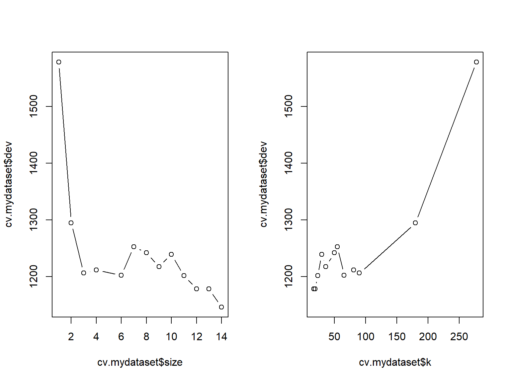
par(mfrow = c(1, 1))It seems clear that, in this case, the smallest error is attained when the tree is not pruned (size=14), so the “best” value of \(\alpha\) leads to not pruning the tree.
# Choose the best tree size
myBest <- cv.mydataset$size[which.min(cv.mydataset$dev)]
# Prune the tree with the best size
prune.mydataset <- prune.tree(tree.mydataset,
best = myBest)
# Plot the pruned regression tree
plot(prune.mydataset)
text(prune.mydataset, pretty = 0)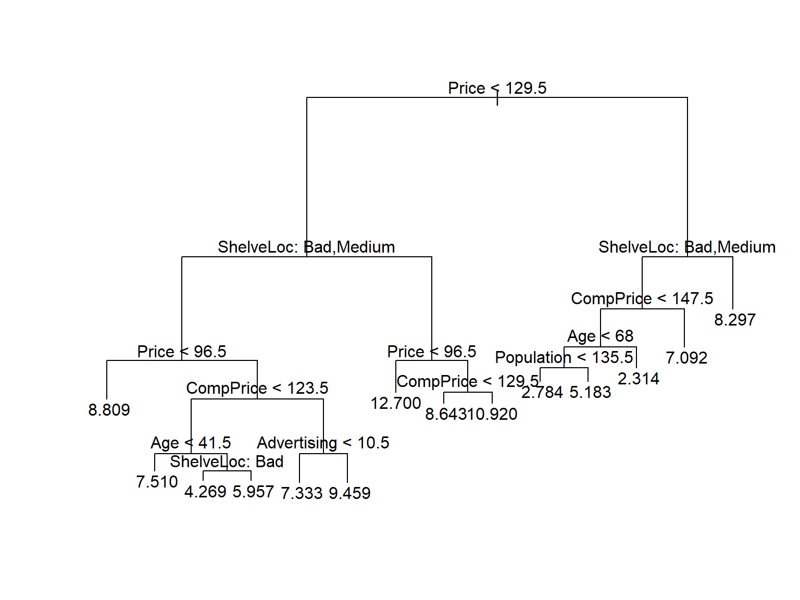
# Predict using the pruned tree
prunedTree.pred <- predict(prune.mydataset, mydataset.test)
# Calculate mean squared error for pruned tree
prunedMSE <- mean((prunedTree.pred - sales.test)^2)
prunedMSE[1] 4.471569In this case, pruning does not improve the tree and the best tree is the one returned by the initial tun of the algorithm.
If however, we look for a compromise between the tree size and the deviance we can choose, based on the cv plots, a size of 6 or even 3:
# Prune the tree with the best size
pruneto5.mydataset <- prune.tree(tree.mydataset,
best = 6)
# Plot the pruned regression tree
plot(pruneto5.mydataset)
text(pruneto5.mydataset, pretty = 0)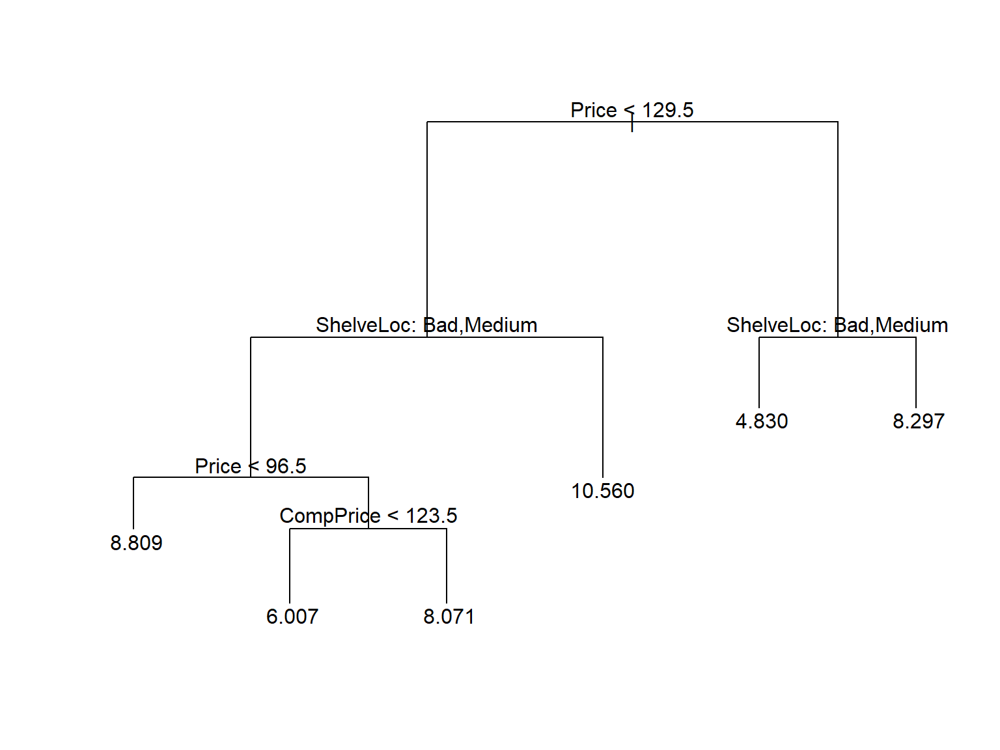
# Predict using the pruned tree
prunedTree5.pred <- predict(pruneto5.mydataset, mydataset.test)
# Calculate mean squared error for pruned tree
prunedMSE5 <- mean((prunedTree5.pred - sales.test)^2)
prunedMSE5[1] 5.001169# Prune the tree with the best size
pruneto3.mydataset <- prune.tree(tree.mydataset,
best = 3)
# Plot the pruned regression tree
plot(pruneto3.mydataset)
text(pruneto3.mydataset, pretty = 0)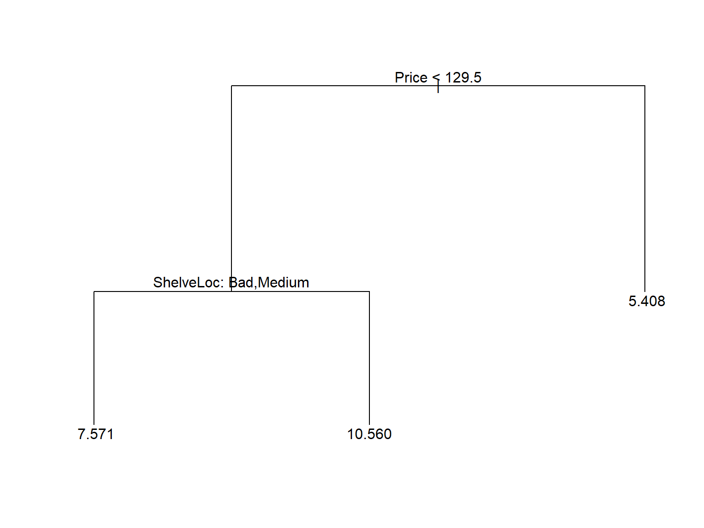
# Predict using the pruned tree
prunedTree3.pred <- predict(pruneto3.mydataset, mydataset.test)
# Calculate mean squared error for pruned tree
prunedMSE3 <- mean((prunedTree3.pred - sales.test)^2)
prunedMSE3[1] 6.555128Clearly, the best compromise seems to prune with a size of 5, which hardly increases the MSE while providinga good simplification of the tree
This example is borrowed from (Rodrigo 2017).
The Boston dataset available in the MASS package contains housing prices for the city of Boston, as well as socioeconomic information for the neighborhood in which they are located.
library(ISLR2)
data("Boston")
datos <- Boston
head(datos, 3) crim zn indus chas nox rm age dis rad tax ptratio lstat medv
1 0.00632 18 2.31 0 0.538 6.575 65.2 4.0900 1 296 15.3 4.98 24.0
2 0.02731 0 7.07 0 0.469 6.421 78.9 4.9671 2 242 17.8 9.14 21.6
3 0.02729 0 7.07 0 0.469 7.185 61.1 4.9671 2 242 17.8 4.03 34.7Our goal is to fit a regression model that allows predicting the average price of a home (medv) based on the available variables.
A quick visualization of the available variables shows that, not only they are of mixed types, but also the relation between them is far from linear inmost if not all cases.
color <- adjustcolor("forestgreen", alpha.f = 0.5)
ps <- function(x, y, ...) { # custom panel function
panel.smooth(x, y, col = color, col.smooth = "black",
cex = 0.7, lwd = 2)
}
nc<- ncol(datos)
pairs(datos[,c(1:6,nc)], cex = 0.7, upper.panel = ps, col = color)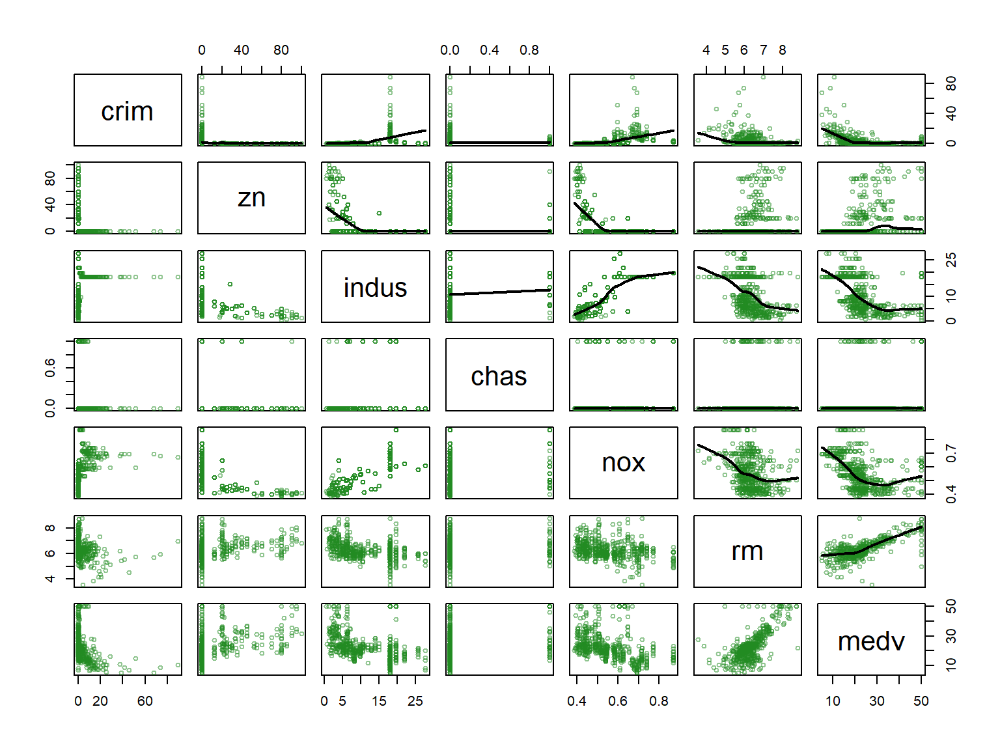
# pairs(datos[,c(7:14)], cex = 0.7, upper.panel = ps, col = color)This is a good scenario to consider regression trees as a good option.
Create a train and test sets
set.seed(123)
train <- sample(1:nrow(datos), size = nrow(datos)/2)
datos_train <- datos[train,]
datos_test <- datos[-train,]We use the tree function of the tree package to build the model. This function grows the tree until it meets a stop condition. By default, these conditions are:
mincut: minimum number of observations that at least one of the child nodes must have for the division to occur.minsize: minimum number of observations a node must have in order for it to be split.set.seed(123)
regTree<- tree::tree(
formula = medv ~ .,
data = datos_train,
split = "deviance",
mincut = 20,
minsize = 50
)
summary(regTree)
Regression tree:
tree::tree(formula = medv ~ ., data = datos_train, split = "deviance",
mincut = 20, minsize = 50)
Variables actually used in tree construction:
[1] "rm" "lstat" "dis" "tax"
Number of terminal nodes: 6
Residual mean deviance: 20.56 = 5078 / 247
Distribution of residuals:
Min. 1st Qu. Median Mean 3rd Qu. Max.
-14.5500 -2.8680 -0.3628 0.0000 2.0050 22.1300 The summary shows that the trained tree has a total of 6 terminal nodes and that the variables rm, lstat, dis and tax have been used as predictors.
In the context of regression trees, the Residual mean deviance term is the residual sum of squares divided by (number of observations - number of terminal nodes). The smaller the deviance, the better the fit of the tree to the training observations.
The tree can be visualized:
par(mar = c(1,1,1,1))
plot(x = regTree, type = "proportional")
text(x = regTree, splits = TRUE, pretty = 0, cex = 0.8, col = "firebrick")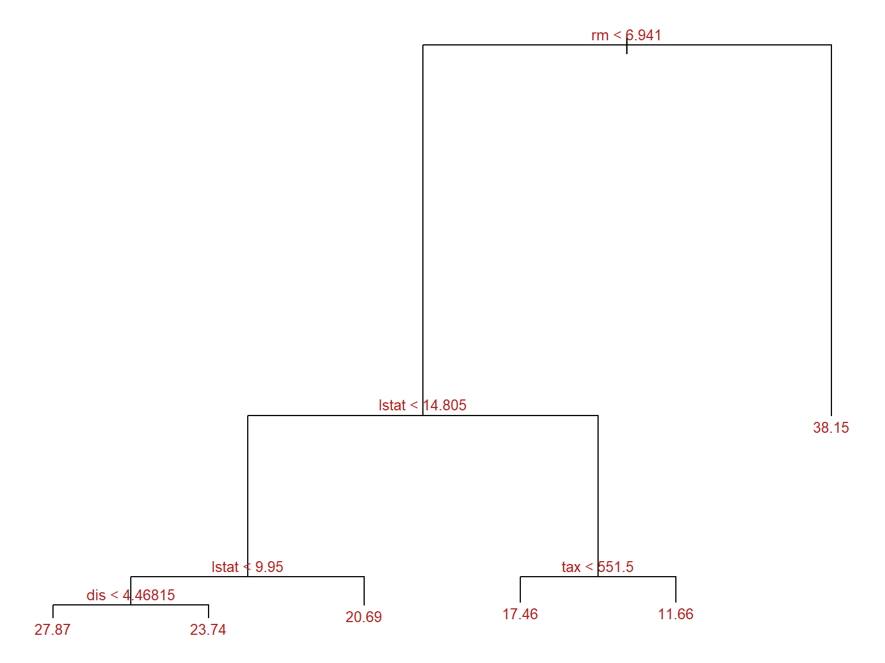
We use the cv.tree function that uses cross validation to identify the optimal penalty value. By default, this function relies on the deviance to guide the pruning process.
We grow the tree again with less restrictive parameters so we have a big tree to prune:
regTree2<- tree::tree(
formula = medv ~ .,
data = datos_train,
split = "deviance",
mincut = 1,
minsize = 2,
mindev = 0
)set.seed(123)
cv_regTree2 <- tree::cv.tree(regTree2, K = 5)The function returns an object cv_regTree2 containing:
size: The size (number of terminal nodes) of each tree.dev: The cross-validation test error estimate for each tree size.k: The range of penalty values \(\alpha\) evaluated.method: The criteria used to select the best tree.These can be used to visualize and understand the optimization performed.
optSize <- rev(cv_regTree2$size)[which.min(rev(cv_regTree2$dev))]
paste("Optimal size obtained is:", optSize)[1] "Optimal size obtained is: 10"library(ggplot2)
library(ggpubr)
resultados_cv <- data.frame(
n_nodes = cv_regTree2$size,
deviance = cv_regTree2$dev,
alpha = cv_regTree2$k
)
p1 <- ggplot(data = resultados_cv, aes(x = n_nodes, y = deviance)) +
geom_line() +
geom_point() +
geom_vline(xintercept = optSize, color = "red") +
labs(title = "Error vs tree size") +
theme_bw()
p2 <- ggplot(data = resultados_cv, aes(x = alpha, y = deviance)) +
geom_line() +
geom_point() +
labs(title = "Error vs penalization (alpha)") +
theme_bw()
ggarrange(p1, p2)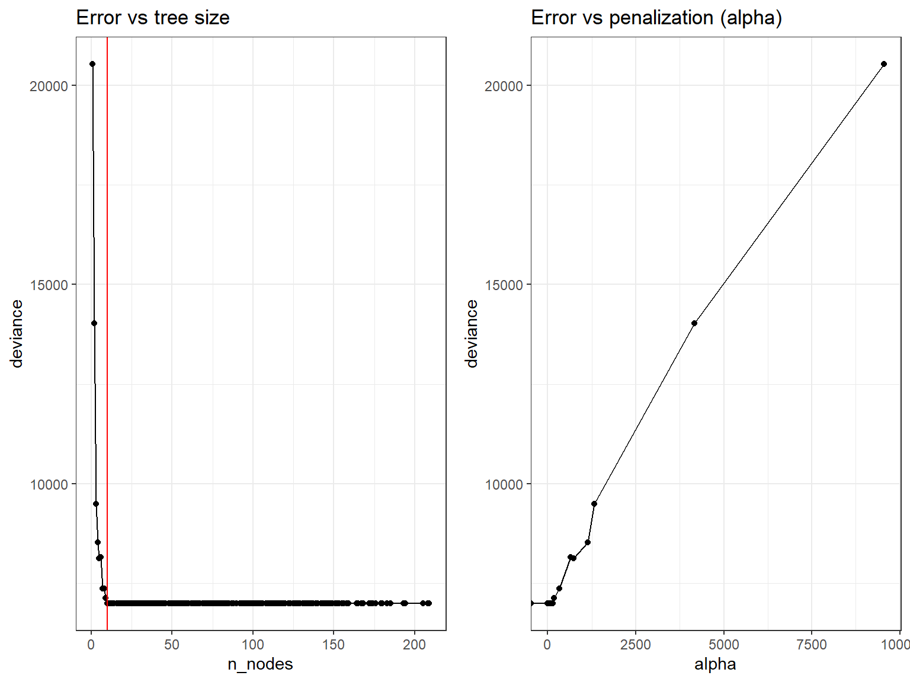
Once the optimal value identified, the final pruning is applied with the prune.tree function. This function also accepts the optimal value of \(\alpha\) instead of size.
finalTree <- tree::prune.tree(
tree = regTree2,
best = optSize
)
par(mar = c(1,1,1,1))
plot(x = finalTree, type = "proportional")
text(x = finalTree, splits = TRUE, pretty = 0, cex = 0.8, col = "firebrick")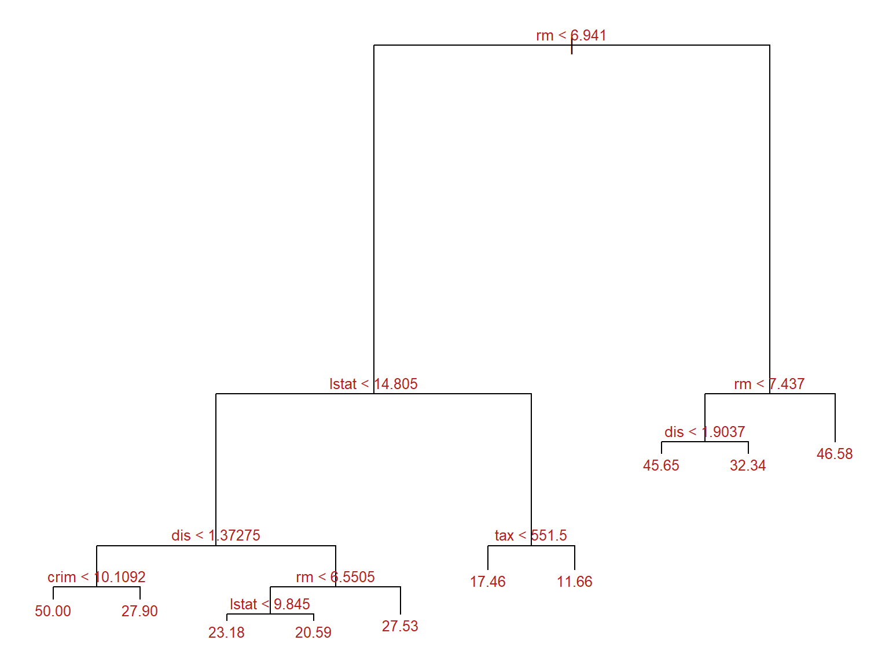
We can use both, original and pruned trees to predict the data for the test set.
The quality of the prediction is based in the Root Mean Square.
For the original tree one has:
predicciones <- predict(regTree, newdata = datos_test)
test_rmse <- sqrt(mean((predicciones - datos_test$medv)^2))
paste("Error de test (rmse) del árbol inicial:", round(test_rmse,2))[1] "Error de test (rmse) del árbol inicial: 5.74"And for the final tree:
predicciones_finales <- predict(finalTree, newdata = datos_test)
test_rmse <- sqrt(mean((predicciones_finales - datos_test$medv)^2))
paste("Error de test (rmse) del árbol final:", round(test_rmse,2))[1] "Error de test (rmse) del árbol final: 5.13"That is The error associated with the prediction has slightly decreased, while the tree is much simpler.
That is what we ideal are aiming at!
caret, rpart, and treeTwo popular packages for working with decision trees are rpart and tree. Both offer functionalities for building and visualizing decision trees. The table below shows a comparison between the main functions of these packages, as well as caret, which is a generic framework for performing classification and prediction tasks, including trees.
| Function / Package | tree | rpart | caret |
|---|---|---|---|
| Building Decision Tree | tree() |
rpart() |
train() with method = “rpart” |
| Visualizing Decision Tree | - | plot() |
plot() with type = “text” |
| Pruning Decision Tree | cv.tree() |
prune() |
train() with method = “rpart” and tuneLength > 1 |
| Evaluating Model Performance | - | predict() |
train() with method = “rpart” and metric = “Accuracy” |
| Handling Missing Values | na.action |
na.action |
preProcess() with method = “medianImpute” |
| Tuning Hyperparameters | - | rpart.control() |
train() with method = “rpart” and tuneGrid argument |
| Visualizing Variable Importance | - | importance() |
varImp() |
| Function / Package | tree | rpart | caret |
|---|---|---|---|
| Building Decision Tree | tree(Species ~ ., data = iris) |
rpart(Species ~ ., data = iris) |
train(Species ~ ., method = "rpart", data = iris) |
| Visualizing Decision Tree | - | plot(fit) |
plot(fit, type = "text") |
| Pruning Decision Tree | cv.tree(Species ~ ., data = iris) |
prune(fit, cp = 0.02) |
train(Species ~ ., method = "rpart", data = iris, tuneLength = 5) |
| Evaluating Model Performance | - | pred <- predict(fit, iris, type = "class") |
train(Species ~ ., method = "rpart", data = iris, metric = "Accuracy") |
| Handling Missing Values | tree(Species ~ ., data = na.omit(iris)) |
rpart(Species ~ ., data = na.omit(iris), na.action = na.rpart) |
preProcess(iris, method = "medianImpute") |
| Tuning Hyperparameters | - | rpart(Species ~ ., data = iris, control = rpart.control(cp = c(0.001, 0.01, 0.1))) |
train(Species ~ ., method = "rpart", data = iris, tuneGrid = expand.grid(cp = c(0.001, 0.01, 0.1))) |
| Visualizing Variable Importance | - | importance(fit) |
varImp(fit) |
These examples illustrate how to perform various tasks related to decision trees using the tree, rpart, and caret packages. Each package has its own syntax and set of functions, so they can be used according to the user’s needs and preferences.
This problem involves the OJ data set which is part of the ISLR2 package.
Once you have solved the exercise, try to repeat it using another R package, either rpàrt or caret. Compare the results obtained and comment about the differences observed.